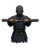
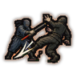
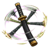
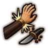
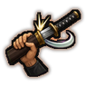
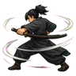

Technique trees › Fighting and weapon styles
Protegra (Sheath Guard)
7 techniques in the Taijutsu tab.
Learned from technique scrolls, mission rewards, written scrolls and scroll merchants; some NPC ninja know it. It counts toward the ninja build like other trees.

Protegera Shi-su Stance D
Passive. D-rank passive. Guard with the sheathed sword: far harder to hit.
Protegera Shi-su Stance D
Passive. D-rank passive. Guard with the sheathed sword: far harder to hit.
D-rank passive. Guard with the sheathed sword: far harder to hit.

Miseshime (Warning) D
Chakra 10. D-rank. Block, then trip one enemy to the ground. Needs a bladed weapon.
Miseshime (Warning) D
Chakra 10. D-rank. Block, then trip one enemy to the ground. Needs a bladed weapon.
D-rank. Block, then trip one enemy to the ground. Needs a bladed weapon.
| Rank | Chakra | Cooldown | Class level |
|---|---|---|---|
| D | 10 | 15 s | 2 |

Rasen (Spiral) C
Chakra 20. C-rank. Spin the sheathed sword and batter everyone around you.
Rasen (Spiral) C
Chakra 20. C-rank. Spin the sheathed sword and batter everyone around you.
C-rank. Spin the sheathed sword and batter everyone around you.
| Rank | Chakra | Cooldown | Class level |
|---|---|---|---|
| C | 20 | 15 s | 5 |

Kasuka Nigiri (Weak Grip) C
Chakra 20. C-rank. Strike one enemy's wrist so the weapon falls. Needs a bladed weapon.
Kasuka Nigiri (Weak Grip) C
Chakra 20. C-rank. Strike one enemy's wrist so the weapon falls. Needs a bladed weapon.
C-rank. Strike one enemy's wrist so the weapon falls. Needs a bladed weapon.
| Rank | Chakra | Cooldown | Class level |
|---|---|---|---|
| C | 20 | 15 s | 5 |

Gou Nottori (Threat Capture) B
Chakra 35. B-rank. Catch one enemy's attack and wrench them off balance. Needs a bladed weapon.
Gou Nottori (Threat Capture) B
Chakra 35. B-rank. Catch one enemy's attack and wrench them off balance. Needs a bladed weapon.
B-rank. Catch one enemy's attack and wrench them off balance. Needs a bladed weapon.
| Rank | Chakra | Cooldown | Class level |
|---|---|---|---|
| B | 35 | 25 s | 9 |

Shu-su Odori (Sheath Dance) A
Chakra 55. A-rank. Turn aside blows from every side for a fight. Needs a bladed weapon.
Shu-su Odori (Sheath Dance) A
Chakra 55. A-rank. Turn aside blows from every side for a fight. Needs a bladed weapon.
A-rank. Turn aside blows from every side for a fight. Needs a bladed weapon.
| Rank | Chakra | Cooldown | Class level |
|---|---|---|---|
| A | 55 | 1.2 hours | 13 |
Oni Yoroi (Demon Armor) S
Chakra 90. S-rank. S-rank. A guard so complete that nothing gets past it for a fight. Needs a bladed weapon.
Oni Yoroi (Demon Armor) S
Chakra 90. S-rank. S-rank. A guard so complete that nothing gets past it for a fight. Needs a bladed weapon.
S-rank. S-rank. A guard so complete that nothing gets past it for a fight. Needs a bladed weapon.
| Rank | Chakra | Cooldown | Class level |
|---|---|---|---|
| S | 90 | 4.8 hours | 18 |
Chakra is the technique's base cost, the number in its def. In play it is multiplied by the pawn's chakra energy usage multiplier, which traits (chakra artificer 90%, volatile conduit 110%), World of Naruto genes and jutsu enhancements change, so the technique window can show a slightly different number for each ninja. Cooldowns are in-game time, as the technique window shows them, and the pawn's cooldown stat shortens or lengthens them. World of Naruto gives every ninja a base of 100 maximum chakra; genes and traits change it.